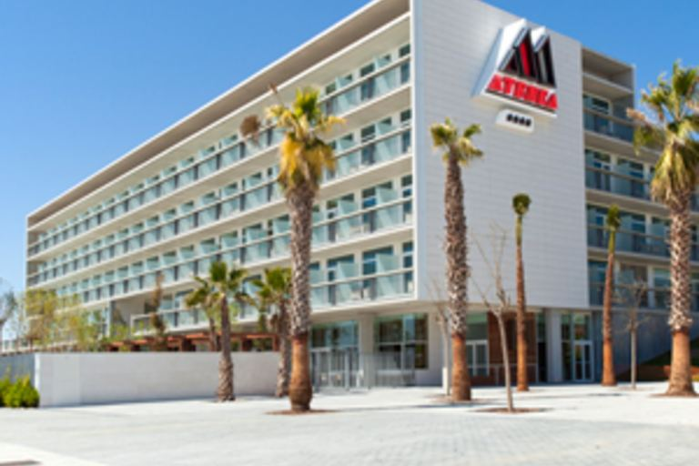

Servei · Mataró
Al port de Mataró, al costat del mar, l'hotel Atenea Port Mataró és un establiment hoteler ubicat al port de la marítima ciutat de Mataró , a 30 km de Barcelona pertanyent al grup hoteler City…